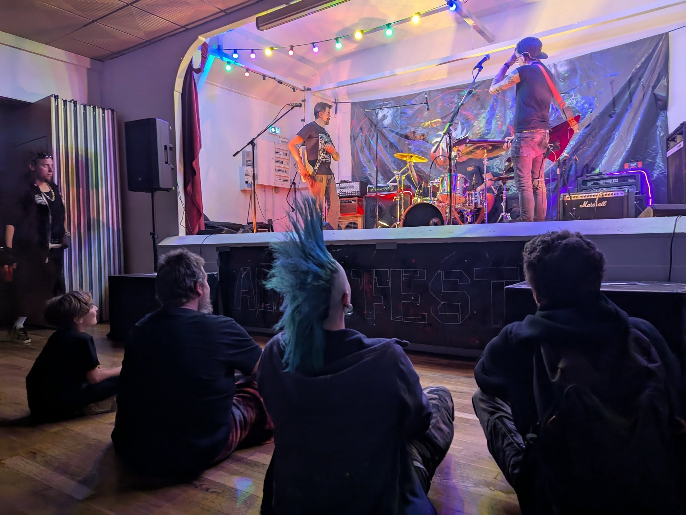

Nos valeurs
L'Aliza’Fest est un festival né d’une envie simple : rendre la culture punk et alternative, en milieu rural, accessible à toutes et tous, sans barrières sociales, économiques ou culturelles.
Ici, pas de logique de rentabilité excessive ni de gros sponsor qui dicte les règles. Le festival s’inscrit dans la même démarche que porte le groupe Alizarine.
Un festival libre, DIY et accessible
Accessibilité avant tout
Prix libre pour permettre à chacun de participer.
Restauration à petit prix.
La culture et la restauration ne doivent pas être un luxe.
Une scène indépendante, brute, et sincère
Les groupes sont majoritairement des copains d'Alizarine et/ou des groupes que l'organisation a vu en concert.
Il n'y a pas de logique de notoriété, juste une découverte, une sympathie, ou une claque musicale.
Ici, tu croises les artistes dans les pogos, tu discutes avec tout le monde.
Sans ces artistes qui nous font confiance, il n'y aurait pas de festival.
100% DIY
Décors, organisation, communication… tout est fait avec les moyens du bord.
Nous voulons être le plus autonome possible, c'est la clé de la liberté.
Grâce à la solidarité des copains, on organise une scène qui s'améliore d'année en année.
On y met toute notre passion !
Artisanat & circuit court, mais punk
Parce qu'on va pas se mentir, on est aussi amateurs de bonne bouffe.
On n'peut pas faire un festival, éthique et alternatif, et proposer de la HK
C'est pourquoi nous travaillons avec des acteurs proches de chez nous, qui partagent nos valeurs.
Mais on sait aussi que, malgré tout ce que l'on peut mettre en place, ça a toujours un coût.
C'est pourquoi, on autorise ta 8.6 du coffre de ta voiture, du moment qu'elle est dans une Eco-Cup.
Un festival humain et respectueux
Inclusion, respect, espace safe et bienveillance au cœur du projet.
Un lieu où chacun peut être soi-même, sans jugement ni discrimination.
No racism, no sexism, no homophobia, no fascism

Notre ambition
Créer un festival où la culture reste libre, accessible et vivante. Un lieu de rencontre entre artistes et public.